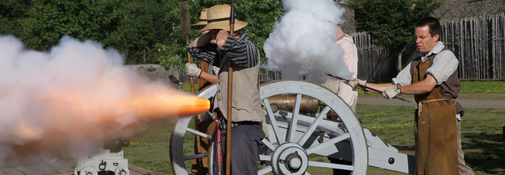

Find the best places to explore in Ontario. We provide you with all the information required for travellers. So start planning your next vacation right here. Check our Search page for a list of attractions that interest you.Find out what special events are going on at our Special Events page. If you are planning on traveling in Ontario,Travel Ontario is the place to find all you need in Ontario. Your all-in-one Ontario Tourism site!
Top 10 Tourist Attractions in Ontario
1. Niagara Falls
You might think that if you’ve seen Niagara Falls once, you’ve seen it all. But the sound of the water as you approach it, the mist you feel on your face as you look up 165 feet at a true natural wonder, and the sheer power of the falls that you can feel to your bones… those things never really get old. Either way, there are a bunch of different ways to experience Niagara Falls. Taking a boat cruise for an up-close and soggy view might be the most classic approach. But you can also Journey Behind the Falls, travelling through tunnels until you’re literally behind a wall of water. Or maybe you want to take them in from above in a helicopter, or wait until nightfall when the Falls light up in color. Throw in all the attractions and entertainment in the surrounding neighborhood, and you start to realize why a classic stays a classic.
2. CN Tower
The CN Tower is one of Canada’s most well-known landmarks. But a visit to the 1,815-foot building isn’t just about seeing the sights. Those who feel a bit bold can walk across the glass floor, only 2.5 inches thick, 113 stories above the ground. Those who are feeling even more bold might travel up another 33 stories to the SkyPod observation platform for the best views of the city. But the real draw, the attraction unlike anything else in the world, is the EdgeWalk. Strap on a harness, head outside the tower and walk along the building’s edge with nothing but air between you and the ground. This is not for those with a fear of heights or the faint-of-heart. It is for those who want a serious adrenaline rush,and the ability to tell their friends they did the highest hands-free walk in the world.
3. Parliament Hill
Canada’s Parliament Hill isn’t just home to the country’s government; it’s also a cultural and community hub whose activities are hosted in a really incredible setting. You can, for example, do yoga on Parliament Hill. Every Wednesday at noon during the summer, hundreds of people flood the hill with mats and yoga pants to stretch out in front of the iconic buildings. You can also take the Sound and Light show, which for 30-minutes projects a beautiful, engaging story onto the Parliament Buildings themselves. And then there are the more traditional activities. Visit the historic Peace Tower for a 360-degree view of the city and take in the Changing of the Guards, before heading inside for a building tour.
4. Fort Williams
Travel 200 years back in time and live the life of a voyageur at Fort William Historical Park. The park was headquarters of the North West Company’s inland fur trade during the early 1800s, trade which played a key role in the foundations of Canada. Feel as though you’ve stepped back in time as you walk among 42 historic buildings, painstakingly reproduced based on archeological evidence and research. Interact with members of 19th-century fur trade society – Scottish fur traders, French voyageurs, artisans, farmers, First Nations Ojibwe and Métis – and hear their personal stories. Witness demonstrations such as canoe building, blacksmithing and tinsmithing. Be part of an era gone by, and come away with a keen understanding of how fur traders lived their lives.
5. Algonquin Park
If you were to make a general list of all the outdoor activities you can think of, you could probably find a solid 90 percent of them in Algonquin Park. Ontario’s very first provincial park is overflowing with activities for every taste and preference. In the warmer seasons, you’ve got backcountry camping, backpacking, biking, boating, fishing, picnicking, swimming, whitewater canoeing and wildlife watching (say that five times fast). Then in the winter, you can add on skiing, snowmobiling and dog sledding. Over 1,500 lakes and nearly 750 miles of streams and rivers are located within the park, and you’ll find over 1,200 campsites along their shores. In other words, there’s no shortage of reasons to visit.
6. Ottawa River Rafting

Northwest of the nation’s capital, the Ottawa River surges through the Canadian Shield. This waterway, once crossed by First Nations and fur traders, is now home to pure whitewater adventure. In fact, the Ottawa Valley is known as the Whitewater Capital of Canada. Choose one of the local rafting companies and, with experienced guides at the helm, safely splash and roll through one of the world’s great whitewater routes. The difficulty and force of the river varies, so you don’t need to be an experienced paddler to enjoy being on the water. Just hop in the boat and enjoy yourself.
7. Bonnechere Caves

Spot a fossil or two in the underground wonderland of the Bonnechere Caves, a network in limestone formed some 500 million years ago. The caves are in the rural Ottawa Valley, about 1.5 hours by car from Ottawa in Eganville. A guide will lead you on a tour through the 50-degree F subterranean landscape via stairs and trails, telling you about the stalactites, rock formations, sinkholes, resident bats, underground waterfalls, and history of the place. Once a year in September, you can even dine with linen and fine china by candlelight in the delightfully cavernous space.
8. Bruce Peninsula

The Bruce Peninsula is a key area for both plant and animal wildlife. Part of the Niagara Escarpment World Biosphere Reserve, the peninsula has the largest remaining area of forest and natural habitat in Southern Ontario and is home to some of the oldest trees in eastern North America. An important flyway for migrating birds, the peninsula is habitat to a variety of animals, including black bear, massasauga rattlesnake, and barred owl.
9. Hamilton Waterfalls

The Hamilton Conservation Authority owns, leases or manages about 4,500 hectares (11,100 acres) of land with the city operating 1,077 hectares (2,661 acres) of parkland at 310 locations. Many of the parks are along the Niagara Escarpment, which runs from Tobermory at the tip of the Bruce Peninsula in the north, to Queenston at the Niagara River in the south, and provides views of the cities and towns at Lake Ontario's western end. The hiking path Bruce Trail runs the length of the escarpment. Hamilton is home to more than 100 waterfalls and cascades, most of which are on or near the Bruce Trail as it winds through the Niagara Escarpment.
10. BAPS Shri Swaminarayan Mandir

The BAPS Shri Swaminarayan Mandir in Etobicoke, Toronto, Ontario, Canada is a traditional Hindu place of worship that was built by the BAPS Swaminarayan Sanstha. The BAPS Swaminarayan Sanstha, which is headed by Mahant Swami Maharaj, is a global spiritual organization within the Swaminarayan branch of Hinduism. The mandir was built in 18 months and consists of 24,000 pieces of hand-carved Italian carrara marble, Turkish limestone and Indian pink stone.